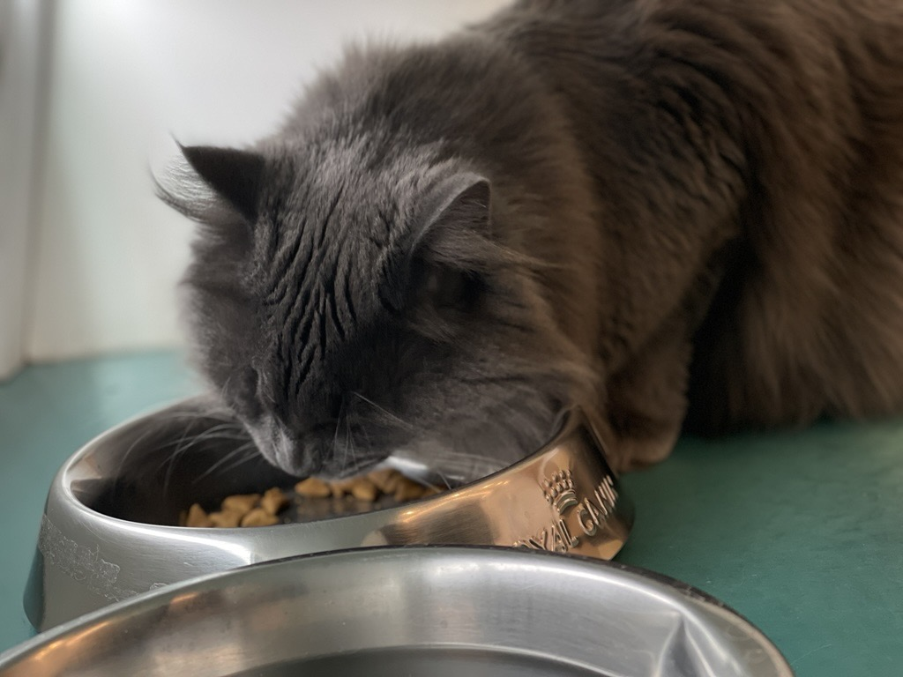

Regal Cat Café
The Regal Cat Café offers a welcoming space for cats waiting to be adopted, giving visitors a chance to interact with them in a calm and comfortable setting. It's a wonderful way to help these lovable cats find their forever homes.
I celebrated my 17th birthday at the Regal Cat Café with just my family since I hadn't started school in Calgary yet and didn't know anyone. The cats that were there when I visited were absolutely the cutest, and as a huge cat lover, it made the experience even more special. Since then, I've returned a few times with friends to relax and hang out with the cats. We usually spend our time petting them and chatting with the volunteers who take care of them. It's always such a calming, joyful experience, and I love supporting a place that does so much for these sweet animals.
K-One Karaoke

K-One Karaoke is the ultimate hangout for singing your heart out in private rooms with your friends, family, or even colleagues. They've got an endless song list in all kinds of languages, plus delicious food and drinks to keep the party going!
My friends and I love going to K-One Karaoke for a fun night out, but we only go on Wednesdays to take advantage of their K-Day Wednesdays deal. For four hours straight, we just let loose, singing our favorite songs—sometimes at the top of our lungs. We munch on snacks, sip on drinks, and the vibe in the room is electric, like we're at a mini concert every time. We even find ourselves belting out the nerdiest songs from musicals without a second thought. It's always a blast, and it's the perfect midweek escape to recharge. Though, looking at how much we're spending each time, I'm thinking we might need to take a break for a while.
Calgary Stampede

The Calgary Stampede is a massive, ten-day rodeo and festival held every July, packed with rodeo events, concerts, and a parade. It's a huge celebration of western culture that draws over a million visitors each year and gives the whole city a fun, cowboy vibe!
I went to the Calgary Stampede for the first time in July 2024, and I'm already excited to return this year. The main reason I went was to see my favorite artist, Jeremy Zucker, perform on the Coca-Cola Stage. My family joined me, and before the concert, my sisters and I enjoyed the Immersive Disney Animation experience. When it was time for the concert, I found myself alone in the crowd, with just my camera in hand. It was an incredible experience, even though I regretted not being closer to the stage. I knew every lyric to each song he performed, probably looking a little out of place as the only one fully invested in the show among casual listeners.